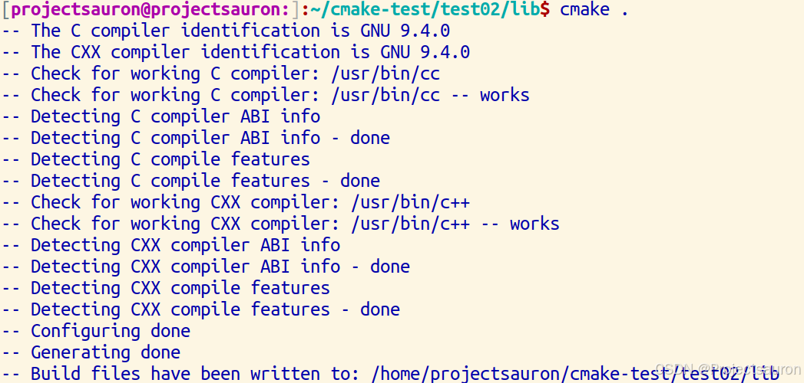
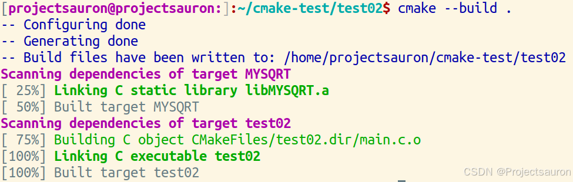
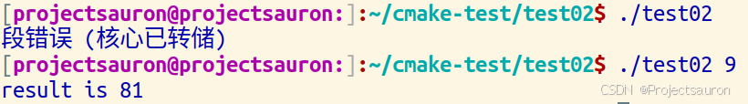
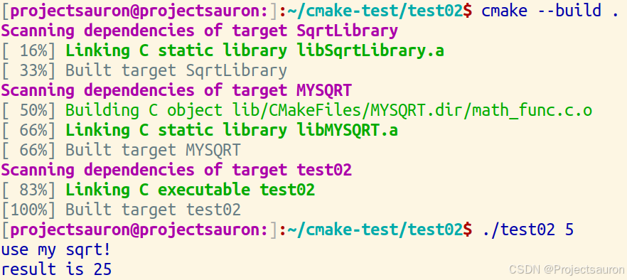
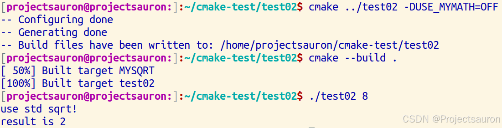

CMake 教程（二）添加库
@toc
在第一节 CMake 教程（一）初识 CMake 中，我们已经了解和实现了通过 CMake 来创建一个基本项目。本节我们将通过两个实例来学习如何在项目中创建和使用库。
一、实例一——创建库
1、add_library
要在 CMake 中添加库，就需要使用 add_library 命令来指定哪些源文件应组成库。
1 | add_library(<name> [<type>] [EXCLUDE_FROM_ALL] <sources>...) |
其作用为：添加一个名为 <name> 的库目标，该目标要从命令调用中列出的源文件构建。
参数说明：
<name>对应于逻辑目标名称，并且在项目中必须是全局唯一的。构建的库的实际文件名是根据本机平台的约定（例如lib<name>.a或<name>.lib）构建的。- 可选的
<type>指定要创建的库的类型：STATIC：链接其他目标时使用的目标文件存档。SHARED：一个动态库，可以由其他目标链接并在运行时加载。MODULE：一个插件，它不能被其他目标链接，但可以在运行时使用类似 dlopen 的功能动态加载。
如果未给出
<type>，则默认值为STATIC或SHARED
2、target_include_directories()、target_link_libraries()
我们可以使用一个或多个子目录来组织项目，而不是将所有源文件放在一个目录中。在这种情况下，我们将专门为我们的库创建一个子目录。在这里，我们可以添加新的 CMakeLists.txt 文件和一个或多个源文件。在顶级 CMakeLists.txt 文件中，我们将使用 add_subdirectory() 命令将子目录添加到构建中。
创建库后，它通过 target_include_directories() 和 target_link_libraries() 连接到我们的可执行目标。
2.1 target_include_directories()
1 | target_include_directories(<target> [SYSTEM] [AFTER|BEFORE] |
指定编译给定目标（例如可执行文件、库等）时要使用的包含目录。命名的 <target> 必须由 add_executable() 或 add_library() 等命令创建，并且不能是 ALIAS 目标。
target：目标名称，可以是一个可执行文件、静态库或动态库的名称。SYSTEM：可选参数，指定包含目录是否应被视为系统目录。表示编译器不会产生警告。[AFTER|BEFORE]：可选参数：BEFORE：参数用于将包含目录添加到已有的包含目录之前，即在搜索其他包含目录之前搜索指定的目录。AFTER：参数用于将包含目录添加到已有的包含目录之后，即在搜索其他包含目录之后搜索指定的目录。
<INTERFACE|PUBLIC|PRIVATE>：可选参数，指定添加的包含目录的属性。INTERFACE：目标的接口包含目录，这意味着只有依赖该目标的其他目标才能看到这个包含目录。对于依赖该目标的目标来说，这个包含目录会像是它自己的接口一样可见。PUBLIC：目标的公共包含目录，这意味着该目标及依赖它的其他目标都可以看到这个包含目录。PRIVATE：目标的私有包含目录，只有该目标自身才可见这个包含目录。
item1...：需要添加的包含目录。
2.2 target_link_libraries()
1 | target_link_libraries(<target> ... <item>... ...) |
target_link_libraries() 命令用于为目标添加链接的库。
<target>：表示要添加库的目标，可以是一个目标名称或者一个目标别名。<item>：表示要链接的库的名称，可以是一个目标名称、一个目标别名、一个链接库或者一个链接库的路径。
target_link_libraries 命令将目标与指定的库进行链接。链接库可以是静态库（.a、.lib 等）或者动态库（.so、.dll 等）。这个命令还可以用于链接其他目标，将目标与目标进行依赖关系的建立。
CMake 会自动获取库的路径和链接依赖关系，因此在使用 target_link_libraries() 命令时，不需要完整的库文件路径。
3、实例操作
接下来，我们尝试向项目中添加一个库，库中包含我们自己实现的用于计算平方的的实现。然后，让可执行文件可以使用这个库，而不是使用编译器提供的标准库函数。
我们把将要实现的库放在 lib 目录下的 my_sqrt.c 和 my_sqrt.h，并实现一个简单的平方函数：
1 | // my_sqrt.h |
然后在 math_func.c 和 math_func.h 文件中封装一下：
1 | // math_func.c |
然后实现这个子目录下的 CMakeLists.txt 文件：
1 | cmake_minimum_required(VERSION 3.16) |
然后执行命令 cmake .：

子目录的工作就完成了。然后是主目录：
在 main.c 文件中简单地调用刚才我们实现的函数：
1 | // main.c |
然后完成 CMakeLists.txt 文件：
1 | cmake_minimum_required(VERSION 3.16) |
注意，对应的库名和目录名一定要对应，否则会找不到库
然后执行 cmake --build .：

大功告成：

二、实例二——添加选项
现在让我们在 MYSQRT 库中添加一个选项，允许开发人员选择自定义平方根实现或内置标准实现。虽然对于本教程来说，确实没有必要这样做，但对于较大的项目来说，这种情况很常见。
1、option()
CMake 可以使用 option() 命令来做到这一点。这为用户提供了一个变量，他们可以在配置 cmake 版本时更改该变量。此设置将存储在缓存中，因此用户无需在每次在 build 目录上运行 CMake 时都设置该值。
1 | option(<variable> "<help_text>" [value]) |
作用：提供用户可以选择选择的布尔选项。
如果未提供初始 <value>，则布尔值 OFF 为默认值。如果 <variable> 已设置为普通变量或缓存变量，则该命令不执行任何操作。
2、实例操作
首先修改 lib 子目录下的 CMakeLists.txt 文件：
1 | cmake_minimum_required(VERSION 3.16) |
注意，因为待会儿的 C 文件中要使用到 C 标准库中的
math.h头文件，所以要连接 math 库：LINK_LIBRARIES(m)
option 添加一个选项 USE_MYMATH。此选项将显示在 cmake-gui 和 ccmake 中，默认值为 ON，用户可以更改该默认值。
至于下面的语句，请看：如果 USE_MYMATH 为 OFF，则不会使用 mysqrt.c，但仍会对其进行编译，因为 MYSQRT 目标在源下列出了 mysqrt.c。
有几种方法可以解决这个问题。第一个选项是使用 target_sources() 从 USE_MYMATH 块中添加 mysqrt.c。另一种选择是在 USE_MYMATH 块中创建一个额外的库，该库负责编译 mysqrt.c。在这里中，我们采取的是后面那种方法。
math_func.c 文件修改如下：
1 |
|
这里通过 printf，可以验证我们的结果是否正确。
因为 USE_MYMATH 默认是 ON，所以编译好后，使用的仍是我们自己实现的函数：

重新执行下面的语句即可：
1 | cmake ../test02 -DUSE_MYMATH=OFF |

现在使用的是标准库。